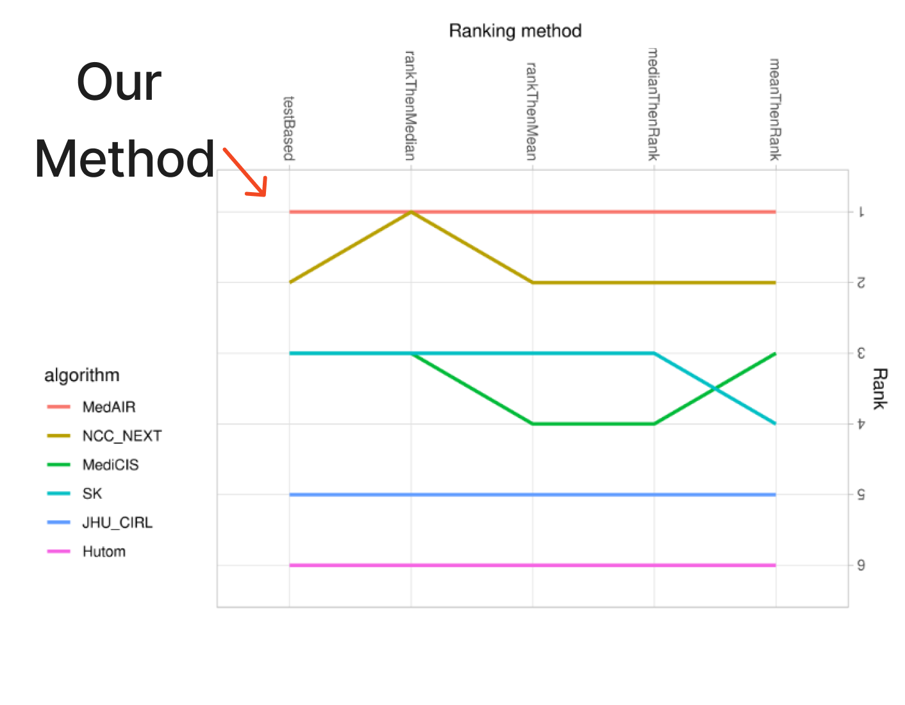
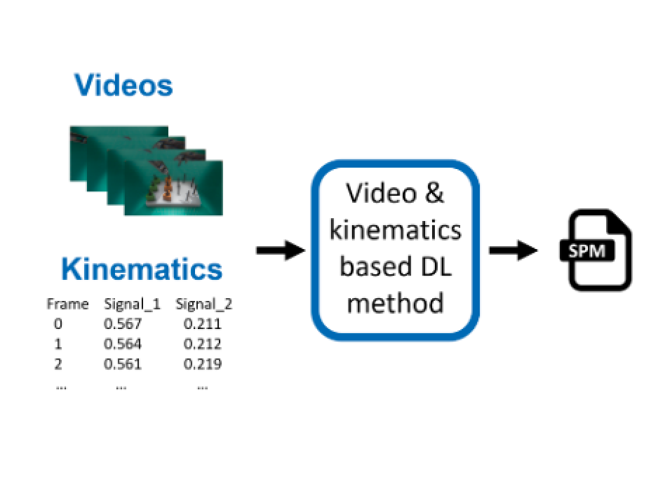

|
Yunshuang Li Hello world! I am a second-year Ph.D. student in Computer Science at the University of Southern California, where I am co-advised by Prof. Daniel Seita and Prof. Gaurav Sukhatme. I received an M.S. degree in Robotics at the University of Pennsylvania in May 2024. I was a member of the Perception, Action, & Learning (PAL) Research Group, advised by Prof. Dinesh Jayaraman. Previously, I worked with Prof. Qi Dou at the Chinese University of Hong Kong as an undergrad researcher. I received my Honorable B.S. degree in Automatic Control from Chu Kochen Honors College, Zhejiang University in 2022. Email / CV / Google Scholar / LinkedIn / Twitter |

|
ResearchI'm interested in learning for dexterous robot manipulation. Specifically, my research explores how to effectively improve robotic capabilities under resource constraints by making effective use of available data and physical resources. My ultimate goal is to advance robotic manipulation toward human-level dexterity, enabling robots to learn and adapt effectively. (* indicates equal contribution, † indicates equal advising) |
|
In Submission
|
Learning Geometry-Aware Nonprehensile Pushing and Pulling
with Dexterous Hands
Yunshuang Li, Yiyang Ling, Gaurav Sukhatme†, Daniel Seita† In Submission arXiv / project page / video / code We propose Geometry-aware Dexterous Pushing and Pulling, a method for nonprehensile manipulation which frames the problem as synthesizing and learning pre-contact dexterous hand poses that lead to effective pushing and pulling. |
|
CoRL
|
Task-Oriented Hierarchical Object Decomposition for Visuomotor Control
Jianing Qian, Yunshuang Li, Bernadette Bucher, Dinesh Jayaraman Conference on Robot Learning (CoRL), 2024 arXiv / project page / video / code We propose to train a large combinatorial family of representations organized by scene entities. This hierarchical object decomposition for task-oriented representations permits selectively assembling different representations specific to each task while scaling in representational capacity with the complexity of the scene and the task. |
|
RSS
|
DROID: A Large-Scale In-The-Wild Robot Manipulation Dataset
DROID Dataset Team Robotics: Science and Systems (RSS), 2024 arXiv / project page / video |
|
ICRA
|
Universal Visual Decomposer: Long-Horizon Manipulation Made Easy
Zichen Zhang*, Yunshuang Li*, Osbert Bastani, Abhishek Gupta, Dinesh Jayaraman, Yecheng Jason Ma†, Luca Weihs† LEAP worshop @ CoRL 2023 (Oral, Best paper award) FMDM worshop @ NeurIPS 2023 (Oral, 6/112) International Conference on Robotics and Automation (ICRA) 2024 (Best Computer Vision Paper Finalist) arXiv / project page / video / code |
|
ICRA
|
Open X-Embodiment: Robotic Learning Datasets and RT-X Models
Open X-Embodiment Team International Conference on Robotics and Automation (ICRA) 2024 (Best Conference Paper Award) arXiv / project page / video / code |
|
CoRL
|
Vision-Based Contact Localization Without Touch or Force Sensing
Leon Kim, Yunshuang Li, Michael Posa, Dinesh Jayaraman Conference on Robot Learning (CoRL), 2023 arXiv / project page / video / code We propose a challenging vision-based extrinsic contact localization task: with only a single RGB-D camera view of a robot workspace, identify when and where an object held by the robot contacts the rest of the environment. |
|
CMPB


|
PEg TRAnsfer Workflow recognition challenge report: Do multimodal data improve recognition?
Arnaud Huaulmé, Kanako Harada, (et al., including Yunshuang Li, Yonghao Long, Qi Dou) Computer Methods and Programs in Biomedicine, 2023 arXiv This is the report paper on Workflow Recognition Challenge in MICCAI 2021. I lead the MedAIR team and rank the first over all the 5 rank method in one sub-challenge on multi-modal (videos and kinematics) workflow recognition of robotic surgery videos. |
Service
Mentorship: Ethan Foong |
Awards
----PhD---- |
Media |
|
Inspired by the template here. |